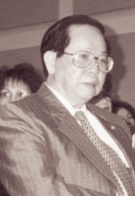
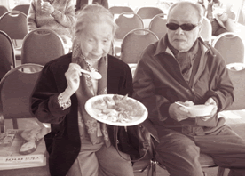

Già không phải là một gánh nặng mà là một nguồn lực"
(WHO Tổ chức sức khỏe thế giới)
"Năm nay tôi đã 95 tuổi, nhưng tôi vẫn tự lo được vệ sinh bản thân mình mà không phải nhờ đến con cháu. Tôi vẫn còn đọc được sách báo, viết văn, làm thơ…". Đó là lời phát biểu của cụ Trùng Quang nhân ngày sinh nhật 95 năm của cụ.
Cùng đi với An Nguyễn, người cháu họ của cụ, ký giả Kiến Nâu đến một căn phòng khá tiện nghi trong một khu chung cư dành cho người cao tuổi, nằm trên đường King, thuộc thành phố San Jose.
Khi chúng tôi đến nơi, đã có mặt một số người với những quà bánh, tặng vật để tập trung ở một góc phòng. Được giới thiệu Kiến Nâu tôi mới biết là con cháu và bạn bè của cụ Trùng Quang. Tôi vừa chào cụ và mọi người xong, thì lễ sinh nhật của cụ cũng được bắt đầu. Hầu hết người tham dự đều cùng hát bản "Happy Birthday" do cô giáo dạy trẻ Milderd và bà hiệu trưởng Patty Hill của trường mẫu giáo Louisville Kentucky (Kingdergarden Louisville Kentucky) sáng tác và đã lưu hành trên toàn thế giới. Mọi người đều chúc cụ "sống lâu trăm tuổi".
Theo lời của An Nguyễn, cụ là một trong những người sống lâu nhất trong gia tộc nhà họ Nguyễn T. Những người bà con khác đều không sống thọ như cụ và đã đều đi "gặp tổ tiên" ở lứa tuổi chưa tròn 60.
Khi qua Mỹ cụ ở lứa tuổi thất thập, nhưng vẫn đến trường lớp học Anh văn và đã tốt nghiệp college khoa học xã hội (social science). Năm rồi cụ đã đoạt giải danh dự về cuộc thi viết truyện nói về nước Hoa Kỳ do hệ thống nhật báo Việt báo tổ chức. Cụ là một trong số người lớn tuổi nhất nhận giải này trong hàng chục người tham dự.
Mới đây, cụ cùng các thức giả đã trích biên soạn và ấn tống tập Bình Ngô Đại Cáo.
"Bình Ngô Đại Cáo" là một bản hùng văn do danh nhân Nguyễn Trãi viết dưới Vương Triều Lê Thái Tổ, và được soạn thảo vào năm 1427 để báo cáo cho toàn dân biết quân ta đã toàn thắng đánh đuổi quân nhà Minh chiếm lại bờ cõi quốc gia. Bình Ngô Đại Cáo là một văn bản viết bằng Hán tự, mang ý nghĩa cứu nước thương dân với tinh thần hào hùng, bất khuất tự cường, đoàn kết để bảo vệ đất nước. Hiện nay, cụ vẫn sinh hoạt trong Ban Phổ Biến Văn Hoá Cổ Truyền Việt Nam, cũng như trong các Hội Thơ Văn trên toàn nước Mỹ, cụ có chân trong Hội Văn Bút Hải Ngoại vẫn sinh hoạt thường xuyên với khu vực Văn Bút Tây Bắc Hoa Kỳ.
Năm nay, gần 90 tuổi cụ HàThượng Nhân một nhà thơ nổi tiếng từ trước năm 1975 đến nay, mà nhiều văn thi sĩ trong vùng Bắc California thường gọi là cụ Hà hay là Hà Chưởng Môn. Cụ không biết lái xe, nhưng ít khi bỏ sót một cuộc sinh hoạt nào của Cộng đồng. Từ việc ra mắt văn thơ đến các cuộc hội thảo có tính cách chính trị đều có mặt cụ tham gia. Một nghĩa tử của cụ cho biết việc tham gia của cụ vào những buổi ra mắt văn thơ sẽ tăng giá trị cho ban tổ chức.
Theo một số bè bạn hiểu biết về cụ, là một người có tài làm thơ, cụ có thể làm bất cứ một thể loại nào và làm rất nhanh. Quanh câu chuyện truyền miệng về việc cụ đã được Tổng Thống Ngô Đình Diệm triệu đến Phủ Đầu Rồng, phong làm Giám Đốc Đài Phát Thanh cho thấy về kiến thức văn học của cụ quả ít ai có được. Một hôm Tổng Thống đi kinh lý đến một làng có một ngôi miếu cổ. Trước hai bên cửa miếu có những hàng chữ Hán, Tổng Thống Diệm bèn quay sang tả, hữu hỏi đoàn tuỳ tùng xem ai biết những chữ Hán khắc trên ngôi miếu cổ kia.Thời gian chầm chậm trôi qua, không một Bộ Trưởng hay Tướng Tá nào đáp ứng yêu cầu của ngài Tổng Thống. Ngài có vẻ khó chịu và bèn quay hỏi mọi người. Khi đó một Đại uý giơ tay lên nói biết những hàng chữ Hán trên. Tổng Thống Diệm cho vời viên Đại uý đến gặp ông. Viên Đại uý đã giải thích cặn kẽ ý nghĩa những hàng chữ Hán trên ngôi miếu cổ. Tổng thống khen ngợi và cho lấy tên tuổi của viên Đại uý đó. Sau chuyến đi kinh lý, Tổng Thống Ngô Đình Diệm cho gọi viên Đại uý vào Dinh Độc Lập trình diện và giao phụ trách Giám Đốc Nha Truyền Thanh Quốc gia. Đó là đại uý Phạm Xuân Ninh, tức cụ HàThượng Nhân bây giờ. Cụ Hà cũng đã nhiều lần được cử đi dự hội nghị Văn Bút Quốc Tế và đã làm cho Văn Bút Việt Nam (thời Đệ Nhất Cộng Hoà) có tiếng nói giá trị trên văn đàn thế giới.
Nay cụ vẫn còn khỏe và vẫn mang hoài bão đem văn hoá phục vụ cho dân tộc Việt Nam. Cụ mong muốn truyền đạt những kinh nghiệm hiểu biết về cuộc đời làm văn hoá của mình đến cho thế hệ mai hậu với đôi lời mong mỏi.
"Tuổi người già.
Người tóc bạc như sương,
Lòng người trẻ.
Người luôn luôn tha thiết,
Đem truyền bá những điều người hiểu biết,
Gạn tinh hoa gởi lại lớp người sau".
(Hà Thượng Nhân)
Bác sĩ Đỗ Hồng Ngọc, một trong những bác sĩ chuyên gắn bó với sức khỏe của người cao niên, trong một bài viết "Già Là Một Nguồn Lực" khẳng định: "già là một hiện tượng sinh lý tự nhiên, một giai đoạn phát triển sinh lý của vòng đời, ai có trẻ thì có già. Già không phải là một bệnh, mặc dù già thì hay bệnh, dễ bệnh. Già là điều tất yếu, là chuyện đương nhiên khi người ta tích tuổi, thêm tuổi. Lạ là ai cũng muốn sống lâu mà lại sợ già!
Sống lâu thì phải già chớ sao! Già cũng là điều phổ quát. Xưa nay Tây ta gì mà chẳng già. Có điều hồi xưa, điều kiện sống khó khăn, y học chưa tiến bộ, con người chết quá sớm thì không kịp thấy già, những vấn đề già không cần đặt ra, như ở Việt Nam trước năm 1945 tuổi thọ chỉ 32, còn nay thì xấp xỉ 70. Như vậy già không riêng ai, không riêng thời nào, không riêng xứ nào. Già cũng là điều không thể đảo ngược được, dù ngày càng có nhiều người lao vào tìm thuốc trường sinh, thậm chí các nhà khoa học tính chuyện can thiệp vào gien để con người cải lão hoàn đồng hoặc sống đến 200 tuổi. Hiện nay người ta đã giúp nữ giới chậm lão hoá bằng cách cung cấp estrogen dán vào người và giúp nam giới thuốc viagra, nhưng thực ra cái gì trái với tự nhiên thì cũng chẳng dễ mang lại những điều tốt!
Già thường đi đôi với bệnh hoạn. Có những thứ bệnh dễ gây tàn phế, làm cho người già sống khổ sở, không hạnh phúc trong những năm tháng còn lại. Nhờ những tiến bộ của y học, người ta hiểu biết tiến trình lão hoá, hiểu biết về bệnh tật của tuổi già và do đó người ta có thể giúp làm giảm thiểu tác hại, phòng tránh được phần lớn các di chứng và như vậy là giúp cho người già sống khỏe mạnh với một cuộc sống có chất lượng hơn xưa.
Thế nhưng, để thực sự sống vui, sống khỏe thì còn phải hiểu những vấn đề thay đổi trong tâm sinh lý ở người già, giải quyết những mối quan hệ của người già với chính bản thân mình, với gia đình, với con cháu, với xã hội, nghĩa là giúp cho người già có khả năng tự điều chỉnh thái độ, hành vi cuộc sống sao cho phù hợp với lứa tuổi, với hoàn cảnh mới và có ý thức dự phòng các nguy cơ bệnh tật. Không thể, không kể đến yếu tố văn hoá, môi trường xã hội, giáo dục sẽ giúp thế hệ sau biết cách cư xử với thế hệ trước, các hình thức tổ chức xã hội thực hiện thế nào để giúp cho người già sống khỏe, sống vui, có bạn bè, có nơi giải trí, có nơi nương tựa.
Nói chung có ba cách đối phó với… "bệnh" già. Hoặc từ chối nó, hoặc nhắm mắt đưa chân, may nhờ rủi chịu, hoặc chấp nhận mà chủ động, hiểu nó, rồi "sống chung hoà bình" với nó, sống hạnh phúc với nó. Có lẽ đây là cách tốt nhất giúp người già tự ý thức trách nhiệm, nhằm tạo điều kiện thuận lợi cho một tuổi già tích cực"
Ngoài cái nhìn chuyên môn của bác sĩ Ngọc còn khuyên là nên sống hoà bình hạnh phúc với người già để tạo cho họ có điều kiện giúp ích cho đời, ký giả Kiến Nâu đã thấy ở người cao niên một nguồn lực dồi dào nữa, đó là tấm lòng muốn đem khả năng, kinh nghiệm của mình đã dày dạn, từng trải, trao lại cho những thế hệ sau mà Kiến Nâu nghĩ rằng, rất cần thiết cho những lớp người trẻ muốn biết những gì ở lớp người đi trước.
Nhà Văn Thanh Thương Hoàng, nguyên là chủ tịch Nghiệp Đoàn Ký Giả của Việt Nam Cộng Hoà và hiện nay là Chủ nhiệm kiêm Chủ Bút Tuần báo Đời, đã tâm sự với những bạn bè và các cộng sự viên: "Có người bảo tôi tuổi đã cao tội gì mà phải lao thân vào việc báo bổ, viết lách làm gì cho cực tấm thân. Nên để thời giờ đi ngao du đây đó cho nhàn hạ cái thân già. Nhưng ông trả lời: "tôi có một hoài bảo là muốn duy trì và phát huy ngôn ngữ Việt của chúng ta nơi hải ngoại, nên cần phải làm những gì có thể làm được cho các thế hệ mai sau".
Tâm tư này đã được ông biểu lộ qua lời phát biểu ngày ra mắt Tuyển Tập Thơ Văn Hoa Vàng: "Phải buồn rầu mà nói rằng, nền văn nghệ hải ngoại của ta hôm nay, đang trong cảnh chợ chiều hiu hắt và rất là buồn thảm. Và với đà xuống dốc này, thì tôi e ngại trong vòng vài mươi năm nữa, sẽ không còn những tập truyện, những tập thơ chữ Việt tức chữ quốc ngữ của chúng ta xuất bản….Nếu con thuyền văn nghệ Việt Nam ở hải ngoại bị chìm đắm, thì trách nhiệm một phần lớn do người cầm bút hôm nay…"
Trong một dịp ra mắt sách khác của một thi hữu ở San Jose, Nhà Văn Thanh Thương Hoàng đã kể cho toàn thể tham dự viên nghe một câu chuyện về vấn nạn của thơ văn. Ông nói rằng:
"Ông có một người bạn già làm thơ, thuộc loại lão làng, có một quá trình nửa thế kỷ làm thơ, có gởi cho ông mấy tập thơ nhờ mang đến các tiệm sách gởi bán. Người chủ tiệm sách thứ nhất, chỉ mới nghe ông nói tới ý định, chưa thèm nhìn tới tập thơ đã xua tay lia lịa và nói cám ơn vì tiếc không còn chổ để bày bán. Người chủ tiệm sách thứ hai, nhẹ nhàng hơn một chút, nói: Thơ không bán được đâu ông ơi, bày làm chi vô ích. Người chủ tiệm sách thứ ba, cầm tập thơ ngắm nghía rồi tấm tắc khen bìa sách đẹp, rồi người chủ tiệm khoan thai chậm rãi nói: Mong ông thông cảm, chúng tôi rất tiếc từ chối việc ông gởi bán, thú thật với ông dù có là bậc thi hào như cụ Tản Đà, thì bán thơ chẳng ai mua đâu! Ông nên bắt chước cụ Tản Đà gánh thơ lên bán chợ trời vậy!
Trong lúc Nhà Văn Thanh Thương Hoàng và người chủ tiệm sách đang nói chuyện, một thanh niên có vẻ là sinh viên đứng gần đó nghe câu chuyện tò mò hỏi Nhà Văn Thanh Thương Hoàng.
- Cụ Tản Đà là ai vậy chú?- Cháu có thấy chợ trời bày bán thi văn bao giờ đâu? Ông Thanh Thương Hoàng phải dài dòng giải thích cho người bạn trẻ biết: Cụ Tản Đà là ai và "chợ trời" đây là chợ trên trời, chứ không phải chợ trời lớn hay nhỏ ở Mỹ này và vì dưới trần thế này thơ văn ế quá, không ai mua, nên cụ Tản Đà phải gánh thơ lên bán chợ trời vậy.
Qua câu chuyện trên, cho chúng ta thấy chính như anh bạn trẻ sinh viên trên là thành phần trí thức mà cũng còn không biết cụ Tản Đà là ai thì nói chi đến giới lao động khác. Cho nên với tình trạng thờ ơ như vậy, chắc nền thơ văn của chúng ta nơi hải ngoại sẽ còn "hoang vắng" và rồi sẽ lần về với "tiếng thơ là những đường tơ của lòng" chứ không còn tích cực phô diễn, phát huy thêm được nữa.
Có người còn bảo: với thái độ thờ ơ như thế, thì đa số giới cầm bút nhất là lãnh vực thơ văn sẽ thối chí, bi quan và xếp bút nghiên lại để đi bán hàng chứ không bán sách cho chợ trời nữa! Nhưng riêng tôi thì quan niệm rằng: "Còn sống thì còn làm thơ văn, vì văn thơ là lẽ sống của chúng ta và qua thơ văn chúng ta sẽ có tất cả. Thơ là trường tồn, thơ là vũ trụ" "Đời không có văn thơ, đời không còn ý nghĩa. Người không yêu thơ văn người mất hết mộng mơ" Tất cả không còn gì tồn tại qua thời gian, chỉ còn thơ văn là niềm an ủi lớn lao, một xúc tích sâu đậm của tâm hồn".
Chúng ta đang ở xứ người, tấm thân phiêu bạt chưa biết ngày nào trở lại quê hương, trong khi hoàng hôn phủ đầy và tuổi đời đang rũ xuống, nếu chúng ta không làm văn thơ, không thưởng thức thơ văn, không có những buổi họp mặt văn thơ, thì cuộc sống của chúng ta sẽ buồn chán lắm, đời sẽ là vô vị. Và đó cũng là lý cớ tại sao mà Nhà Văn Thanh Thương Hoàng với tuổi đời không còn "đủ trẻ" không chịu hưởng nhàn như các bậc thức giả thời xưa "một mai một cuốc, một cần câu" mà còn phải lăn xả vào trận chiến báo bổ để mong cố giữ gìn và phát huy chữ Việt cho thế hệ mai sau.
Trong diện những vị cao niên không chịu "ngồi yên", ký giả Kiến Nâu còn thấy có nhà khoa học Nguyễn Xuân Vinh, người đã một thời làm rạng danh cho dân Việt trên toàn thế giới, qua công trình kỹ thuật thành công về độ chính xác ráp nối giữa hai thân "mẹ và con" phi thuyền Appolo 11 của Hoa Kỳ trong thập niên 60. Ngoài lãnh vực khoa học, người ta còn biết ông Nguyễn Xuân Vinh là một nhà văn, nhà quân sự đã có thời là tư lệnh binh chủng Không Quân của nền Đệ Nhất Cộng Hoà Việt Nam.
Hiện nay, với số tuổi ngoài bát tuần, ông Nguyễn Xuân Vinh cũng không chịu ngồi yên. Ông luôn gắn bó với Cộng đồng người Việt trong mọi sinh hoạt tranh đấu cho đất nước Việt Nam mai sau có được một nền dân chủ tự do, cho nền văn hoá dân tộc Việt ở hải ngoại mỗi ngày một phát triển, khỏi rơi vào mai một. Và với niềm hy vọng sẽ có được một thế hệ trẻ nối gót cha ông, lãnh đạo đất nước đem lại cho dân tộc Việt Nam phú cường, ông Nguyễn Xuân Vinh mỗi khi đến sinh hoạt với cộng đồng, thường kêu gọi và nhắn nhủ lớp người trẻ trí thức Việt Nam, hiện đang ngụ trên đất My, làm việc trong các công ty, cũng như trong chính quyền Mỹ có ý thức dân tộc và có một tinh thần dấn thân, hy sinh cho dân tộc. Tinh thần của ông đã được thể hiện qua một bài phát biểu trong dịp nói chuyện với nhóm bạn trẻ, luật sư Trần Thái Văn, Anny Quách và luật sư Nguyễn Quốc Lân đến thành phố San Jose gây quỹ tranh cử vào Hạ Nghị Viện tiểu bang California.
"Trong những phương thức tranh đấu cho một đất nước, có được sự tự do dân chủ, như hoàn cảnh nước ta hiện nay, thiết tưởng chúng ta cần phải tranh đấu toàn diện. Giới trẻ Việt Nam sẽ là thành phần trụ cột, năng động trong mọi lãnh vực, sẽ là niềm tin của lớp người đi trước hy vọng có được một đất nước Việt Nam thanh bình trong dân chủ tự do không cộng sản. Giới trẻ Việt nam cần nên tham gia thật nhiều vào chính trường My, vì đó là một môi trường để tuổi trẻ Việt Nam học hỏi về tiềm năng cơ cấu quyền lực của một nước mạnh và từ đó nhận thức ra được thế nào là "giải phóng" một dân tộc".
Trong diện giữ gìn và phát huy tiếng Việt nơi hải ngoại, ông thường xuyên có mặt trong các buổi ra mắt thơ, văn đồng thời có những bài nhận định về tác phẩm có giá trị.
Được biết ngoài tác phẩm nổi tiếng "Đời Phi Công" với bút hiệu Toàn Phong, viết vào thời còn là một phi công trẻ tuổi, hiện nay ông có rất nhiều tác phẩm đang viết vào tuổi thất thập. Khi được ký giả Kiến Nâu hỏi về nhân vật Phượng trong "Đời Phi Công" có phải đây là "người tình trong mộng" nay là phu nhân của ông? Ông cười và nói: "nhân vật của nghiệp văn chương đấy mà" Ông thường thăm viếng, khuyến khích các em nhỏ nên học tiếng Việt để hiểu biết thêm về những đặc tính của dân tộc, hiểu mà thương con người và đất nước Việt Nam.
Qua những cống hiến và những hoài bảo dành cho quê hương dân tộc, Kiến Nâu tôi nghĩ lớp trẻ Việt Nam sẽ không phụ lòng ông. Không ngoài mục đích giúp ích cho đời, cụ bà Vương Thị Lan đã hơn 80 tuổi cũng không ngồi yên nhìn những trẻ con ở làng quê của cụ thất học, ngày ngày phải đi bán vé số hay chăn trâu, bò ngoài đồng. Cụ tình nguyện hiến 300 triệu đồng (Việt Nam) để hổ trợ với đồng bào trong làng xây trường học, mướn giáo viên về dạy cho các em.
Làng X là một làng hẻo lánh nằm sát biên giới Miên Việt thuộc tỉnh Tây Ninh, có độ khoảng 300 hộ dân, phần lớn sống bằng nghề làm rẫy và buôn bán nông sản. Năm 1994, chưa có một ngôi trường nào để dạy chữ cho con em trong làng, chỉ có một lớp học duy nhất trong căn nhà của cụ bà Vương Thị Lan do con gái cụ, cô Ngô Thị Vàng tình nguyện làm giáo viên với khoảng 10 em.
Cụ bà Vương Thị Lan sinh trong một gia đình nghèo ở làng Hoà Hội, thuộc Tỉnh Tây Ninh, phải đi ở đợ từ năm 10 tuổi và chịu nhiều khổ cực. Đến năm 12 tuổi phải ra chợ bán từng củ mì, củ khoai, rau quả… Ý chí và nổ lực đã đưa cụ trở thành một bà chủ cơ sở của hệ thống nhà máy xây lúa liên xã trong vùng biên giới. Rồi tiếp tục cố gắng học hành để thoát nạn mù chữ mong có một ít căn bản kiến thức học vấn, điều hành công việc gia đình và giúp xã hội.
Vào những năm chiến tranh, cụ đã có nhiều người con gia nhập Quân Đội Việt Nam Cộng Hoà. Trong số các con của cụ có người đã nắm những chức vụ quan trọng trong bộ máy quân sự tỉnh Tây Ninh. (trước 75)
Cụ Vương Thị Lan quyết tâm chống lại sự dốt nát và nghèo đói nên luôn vận động bà con trong làng đưa con em đến trường. Cụ tâm sự: "Dù rằng đất nước không còn chiến tranh, không còn tiếng súng trên quê hương, nhưng giặc đói và dốt vẫn còn đang hoành hành. Người dân các vùng xa xôi đô thị vẫn còn chịu khổ. Các em nhỏ vẫn còn lang thang, mù chữ vì thiếu trường ốc. Trong cuộc đời mình và lớp tuổi cùng lứa của mình đã quá cực khổ nên tôi mong muốn thế hệ sau tôi và sau nữa có được một đời sống yên bình có tri thức và tự do".
Nhắc đến các cụ cao niên không chịu "ngồi yên" chúng ta còn có nhiều tấm gương tiêu biểu, có cụ đã quá bát tuần nhưng vẫn sinh hoạt văn học, văn hoá mong truyền những kiến thức, kinh nghiệm của mình cho con cháu mai sau, đó là điều trân quí đáng phục. Tuy nhiên trong cụm từ "các cụ cao niên không chịu ngồi yên" ký giả Kiến Nâu còn thấy có sự liên quan đến với các cụ vốn có "tâm hồn trẻ" trong lãnh vực sinh hoạt "trai gái" mà theo một cụ ông sống nhiều năm bằng nghề gác dan trong các nhà massage ở San Francisco gọi là làm nhiệm vụ "truyền tải chất quí hiếm" cho các vị thần nữ.
Cụ Cung kể rằng: "Năm nay, tôi 78 tuổi nhưng tôi cảm thấy tôi chưa già. Cái gì mà sợ già! Đừng sợ già, sợ chết. Sinh diệt là chuyện bình thường. Có sinh ra là có chết "Xuân đang tới nghĩa là Xuân đang qua; Xuân còn non nghĩa là Xuân sẽ già" (Xuân Diệu). Đó là quy luật không ai tránh khỏi, vậy tại sao lại sợ? Có kẻ chỉ vì lo chết, sợ già mà không bệnh cũng sinh ra bệnh; không lo sống mà chỉ lo chết nên đâm ra già mau chết. Vậy cứ tự nhiên mà sống, sống vui, sống khoẻ, cần phải hưởng thụ tất cả những gì trời đất đã cho con người.
Từ lúc 15 tuổi biết yêu đương đến nay, tôi chẳng từ khước mọi cuộc tình nào. Tôi không thái quá trong tình cảm, tôi luôn trân trọng tình cảm. Tôi đã đến và đến với rất nhiều "đối tượng tình cảm" và tôi cảm thấy sự trẻ trung của tôi đã kéo dài được từ đó. Tôi không thể ngồi yên nhìn tuổi đời đi qua mà không mang chút hương vị hoan lạc nào. Qua phân tích chất lượng hồng huyết cầu và một số khía cạnh khác về y khoa thông qua cơ thể tôi, một bác sĩ nói, "cơ thể tôi có nhiều điều kiện tốt cho sinh hoạt nam nữ đó là yếu tố ưu điểm của tôi". Hiện tại với số tuổi này, mỗi khi có "chiến tranh" với các "vì sao nữ" tôi vẫn chưa buông vũ khí để trở thành kẻ chiến bại bao giờ, chỉ trừ khi luồng khí lạnh từ Alaska đưa xuống làm tổn hại sức khỏe.
Có vài lần tôi về Việt Nam và Bắc du ra tới thủ đô "nghìn năm văn vật" định tìm lại những kỷ niệm thuở nào của thời niên thiếu, đang thơ thẩn quanh hồ gươm thì bỗng có một "nàng tiên" dịu dàng bước lại gần, gật đầu chào và lên tiếng:
- Thưa ông, có phải ông là người phương xa mới đến?
- Vâng, tôi đến từ….
- Từ Mỹ phải không?
- Sao cô lại biết? Hay nhỉ?
- Đã nói là tiên làm sao mà không biết sinh hoạt của người phàm.
- Cô là người Hà Nội?
- Vâng em là người Hà Nội. Còn ông?
- Tôi cũng Hà… nhưng Lội.
- Ông này vui ghê nhỉ! Thế là người Hà… Lội có muốn "ngỏ hồn qua đêm" không?
- Ngỏ hồn làm gì cho có vẻ phiêu bồng. Hãy cứ….ngỏ xác đi nhé!
Tôi được đưa đến một khu phố trông là lạ, nằm khuất sau một building cao tầng cạnh Hồ Gươm. Và với "nàng tiên Thuý Kiều", tôi già nhưng đâu phải là đồ bỏ".
Chị nói mần sao! Đụng tới chị, chị cho lật gọng hả? Đó là câu hỏi gằn của cụ Lăng với Nhăng một người đàn bà với ám danh "Nhăng danger".
Cụ Lăng đến Mỹ theo diện bảo lãnh của con gái. Con gái cụ là vợ của một thương gia giàu có trong thành phố San Jose. Cô Jane Vu thường đi chùa cúng dường cũng như giúp đỡ các hội đoàn người Việt ở vùng Bắc Cali. Nhìn qua những hành động cô thể hiện đối với xã hội bên ngoài, ai cũng nghĩ rằng cô là một người con có hiếu với cha mẹ. Nhưng thực tế đều ngược lại, cô đối xử rất thậm tệ với cụ Lăng. Nhiều lần cô đuổi cụ Lăng ra khỏi nhà (không biết lý do gì) và cụ không thể tiếp tục ở nhà của con mình nên phải ra đi.
Cụ Lăng mướn một căn phòng trên đường Senter để sống cho qua ngày đoạn tháng với tuổi thất tuần.Chỉ vỏn vẹn có hai tuần sau khi mướn xong căn phòng, người ta thấy có nhiều người đàn bà với nhiều hạng tuổi khác nhau đến căn phòng của cụ thăm viếng. Một người hàng xóm của cụ nói với ký giả Kiến Nâu về lai lịch của cụ nên biết: cụ Lăng goá vợ từ Việt Nam lúc cụ ở tuổi lục tuần, cụ không tái giá và ở vậy nuôi hai con là cô Jane với cậu Le Vu. Vì thời cuộc hai con của cụ đã tìm đường tự do. Cụ sống trong một căn nhà tương đối đầy đủ tiện nghi ở Saigon và với số tiền cung cấp hàng tháng của con cái, cụ không phải làm thêm bất cứ một nghề gì để sinh sống. Hàng ngày cụ thường đến những quán cà phê nghe nhạc và đến nhà sách để tìm những sách nói về "thuật phòng the" của các vua chúa thời cổ, cũng như sưu tầm những vị thuốc đông phương trợ giúp cho tuổi già khi "lâm trận" càng dẻo, càng dai.
Trong số các bà đến với cụ tại căn phòng trên đường Senter có bà "Nhăng danger". Nhìn dáng vóc và diện mạo, chắc không một ai có thể dám nghĩ bà là một người không có tư cách, vì lúc nào bà cũng vui vẻ lịch thiệp với mọi người, ngay khi những việc gì khẩn cấp cần đến, ít khi bà từ chối. Để tạo thêm bạn bè và "bè phái" bà thường dùng công thức "quà cáp" biếu xén. Có lần Martha, anh bạn ký giả Kiến Nâu tiếp xúc với bà qua sự giới thiệu của một người bạn khác và bạn ấy đã kể lại cho Kiến Nâu nghe. Kiến Nâu tôi không khỏi khen thầm tính "cởi mở lòng" của bà. Có thể nói bà thật khéo và khéo đến mức độ người đàn ông nào cũng phải "mở lòng" để cho bà ngồi vào và đệm đoản nhạc "ta đưa ta về nguyên thuỷ loài người, mùa yêu thương muốn ngỏ, vụng về ngôn ngữ tình làm bằng dấu đôi tay" của nhạc sĩ Trúc Phương.
Với cụ Lăng, "Nhăng danger" vừa là một người tình vừa là một người bạn. Với tư cách một người tình, "Nhăng danger" nhằm giải quyết những cuồng dục của mình vì biết cụ Lăng không phải là một tay vừa trong "nghệ thuật yêu đương". Cũng qua lời Martha, gọi bà ấy là "bà" cho nó có vẻ trẻ trung tí xíu, chứ thật ra "Nhăng danger" đã ở vào tuổi non thất tuần, đúng nhất nên gọi là cụ bà. Cụ bà "Nhăng danger" đã có một bề dày kinh nghiệm trong lãnh vực "ái ân" nên đã được nhiều cụ ưa thích. Trong câu chuyện đùa vui chỉ có hai người (Martha và Nhăng danger) cụ "Nhăng danger" cường giọng: "cái lão Lăng sức mấy mà chịu nổi tui, tiếng đồn là nhà nghiên cứu chiến thuật, chiến lược phòng the, phòng kín vậy chứ dàn trận thì xếp giáp chạy dài. Trời! Lão làm tàng với ai chứ với "Nhăng danger" này hở, chỉ có "gói xác" đem chôn mà thôi. Một lần nọ, lão nốc vào mấy viên thuốc "cường dương" không biết hiệu gì, nhưng tinh thần có vẻ háo hức hung hăng bọ xít lắm. Lão điện thoại cho tôi phải đến cho lão "dạy việc" ngay. Lão ra giọng chê bai tôi là "cụ" làm gì mà còn "xí quách" để theo nổi cuộc chơi của lão. Nhưng lão đã bị "ói" trước ngưỡng cửa vào "hoàng cung" đành phải tấm tắc khen thầm:
"Nhăng danger", "cụ Nhăng danger" đâu phải là đồ bỏ!
Tình cờ gặp cụ Lăng trong quán cà phê Bốn Mùa, Kiến Nâu không khỏi thất vọng nhìn "tướng tá" của cụ như "que tăm" nhưng sao lại có tiếng đồn về "vụ ấy" ghê quá nên tò mò đến làm quen.
- Thưa cụ cháu là phóng viên Kiến Nâu Tuần Báo Đời Mới SanJose xin chào cụ.
- Ừ, chào cháu. Cháu là ký giả hả?
- Dạ, cháu là ký giả.
- Làm báo có đủ sống không cháu?
- Đắp đổi qua ngày cụ ơi!
- Ờ, báo chí vùng này nhiều quá, lại nữa sống nhờ vào quảng cáo nên cũng khó phát triển.
- Cụ thường đọc báo không?
- Ngày nào mà tôi không đọc, sáng sớm bọn chúng tôi dăm ba người già thả bộ ra khu Lion lấy báo đem về nhà rảnh rổi đọc hết tờ này đến tờ khác. Báo Đời Mới của cháu hay ghê à nghen, nhiều bài vở hay lắm, nhất là các loạt bài phóng sự cũng như những bài viết về chủ đề. Thâm hơn nữa là trang Phiếm Luận và Diễn Đàn có những tay nhà báo hay nhà văn nào đó… viết những bài Phiếm có vẻ "cao cấp" đấy.
- Cháu cám ơn cụ có lời khen. Và tiện đây, cháu xin phép cụ cho cháu phỏng vấn cụ một vài câu về "nghệ thuật ái ân" của tuổi già mà theo như lời đồn đãi cụ là người chuyên nghiên cứu về "thuật phòng the" của các vua chúa thời xưa.
- Được chứ!
- Thưa cụ, theo lời truyền tụng thì các vua chúa thời xưa, mặc dù tuổi đã già nhưng vẫn còn phong độ trong khi ân ái với các cung tần mỹ nữ là nhờ vào "Xuân Dược" (có những ông vua có tới hàng ngàn cung phi).Và nhờ nghiên cứu sách báo tìm tòi các phương thuốc, đồng thời sử dụng nó, nên mới có tiếng đồn về cụ là "bậc thầy" trong nghệ thuật phòng the?
- Riêng cá nhân tôi có lẽ đúng. Tôi có thể nói với cháu cái "việc ấy" tôi đỡ lắm ít khi thua trận, ngay khi phải tác chiến trong một môi trường thật là hiểm trở.(lúc long thể bất an) Trong tình huống nào tôi cũng luôn luôn chủ động và đã không làm cho phái quần hồng thất vọng. Tôi cũng ít khi dùng thuốc trợ lực. Tuy nhiên, nói rằng tôi là "bậc thầy" trong "việc ấy" thì thấy hổ ngươi cho tôi, vì cụ "Nhăng danger" đã từng chê tôi "ói" trước cổng "hoàng cung" đấy mà!".
Về các vua chúa thời xưa với vô số thê thiếp, làm sao mà "làm tròn phận sự?" Dĩ nhiên, vấn đề phòng trung thuật (thuật phòng the) và các loại "xuân dược" ra đời có những tác dụng nhất định nhưng cũng có tác hại, chỉ biết cách sử dụng mới tốt. (1) Trong "Kim Bình Mai" tác phẩm bậc thầy về tình dục của Trung Quốc, Tây Môn khánh đã chết vì tửu sắc. Nhưng nguyên nhân trực tiếp lại là do việc dùng "xuân dược". Phan Kim Liên đã cho Tây Môn Khánh dùng quá liều khiến ông ta xuất tinh liên tục, rồi xuất huyết, kiệt sức và chết. Cũng vậy, trong "Yến Phi Ngoại Truyện" vì hoang dâm vô độ, Hán Thành Đế bị chứng hư nhược, phải dùng thuốc trợ lực do ngự y bào chế, có tên "thận tuất cao", được coi là một thứ thần dược hiệu nghiệm vô song. Theo lời căn dặn của ngự y, Hán Thành Đế chỉ được dùng mỗi đêm một viên. Nhưng một lần, Triệu Hợp Đức- em ruột Triệu Phi Yến- vì say rượu, quên lời dặn, cho vua dùng tới 7 viên khiến vua "bạo tử"! Đó là vài trường hợp, của vua chúa Trung Hoa. Còn những vị Vương Đế của Việt nam thì sao? Cũng không thua kém với các vị Đế Vương của Trung Quốc. Trong tương truyền, vua Lê Long Đĩnh rất là khó nhọc lắm mới có thể ngồi được lâu để tham gia việc triều chính cùng các quan văn võ. Ngài thường nằm để dự những buổi thiết triều nên tục gọi là "ngoạ triều". Ngài băng hà hãy còn rất trẻ.
Dùng "xuân dược" nhiều nhất và an toàn nhất phải nói đến vua Minh Mạng của nhà Nguyễn.
Chắc chắn, xuân dược là một phát minh đặc thù của các "chuyên gia" phòng trung thuật cổ đại mà tài liệu được tìm thấy cách đây 2100 năm. Gần đây giới khảo cổ đã khai quật những ngôi mộ cổ đời Hán ở gò Mã Vương. Những bộ sách y học "Dưỡng sinh phương, " "Tạp liệu Phương, …" đã được phát hiện. Qua 32 tiêu đề các bộ sách trên đều nhấn mạnh rằng xuân dược có tác dụng trị dương suy, tráng dương bổ thận trị "khuyết tật" của các cơ quan sinh dục, bồi dưỡng cơ thể. Dĩ nhiên, các chất dược này có khả năng kích thích tính dục.
Trong số các tên thuốc, hơn một nữa chỉ rõ liều lượng, cách dùng, nhưng hiếm khi bàn luận về hiệu quả. Dường như nội dung này được thể hiện trong mỗi tên gọi, chẳng hạn như "Ích cam" có nghĩa là có "Ích trung cam mỹ" (kích thích âm đạo).
Nhiều khi, bệnh chứng trở thành tên gọi của một loại thuốc như "Lão bất khởi" hoặc "Bất khởi". Đến đời nhà Minh, "văn hoá xuân dược" đã được hình thành. Tác phẩm "Nhiếp sinh tổng yếu" thu thập phần lớn các trứ tác "Phòng trung thuật" trước đó để phổ biến. Trong đó hai tác phẩm chủ yếu là" Phòng thuật kỳ thư" và "Phòng thuật huyền cơ toàn yếu", tập trung vào vấn đề xuân dược với những tên gọi ngụ ý thật hấp dẫn. Thái bình công chúa vạn thanh kiều, An lộc sơn triệt dạ tư tình tán, Dương phi dạ dạ kiều, Tuỳ dương đế hạnh quần nữ biến cung xuân, Nhất độ thập niên tưởng, Nhất độ chung thân tưởng, …
Phòng thuật và xuân dược của Trung Quốc đã đặt cơ sở trên thực tế và lý luận của khoa học tính dục cổ đại. Tuy nhiên, sắc thái mê tín của các đạo gia và phương sĩ đời sau đã hạn chế vấn đề. Mặc dù hiện nay, nhiều người lên án hiện tượng phòng thuậtvà xuân dược, nhưng xét tới cùng, đấy là những tư liệu quí về xã hội học. Văn hoá học, sinh lý học, tâm lý tính dục học, y học về tính dục và cả một cơ sở quan niệm tính dục sâu sắc đã thể hiện ở đấy. Dĩ nhiên, không thể phủ nhận việc tìm kiếm xuân dược cho vua chúa vì nhu cầu hưởng lạc. Đến nỗi hiến "phòng thuật" dâng "xuân phương" để được trọng dụng đã trở thành con đường tiến thân phổ biến trong xã hội. Năm Gia Tĩnh, Đào Trọng Văn nhờ tặng "linh đơn" kích dục mà được vua sũng hạnh, làm quan đến đại phu, được phong tước Bá, giữ chức Thiếu sư quan trọng trong triều. Thậm chí, Thịnh Đoan Minh và Cổ Tư học đời Minh cũng nhờ dâng xuân dược cho vua mà được đỗ tiến sĩ và làm quan to! Sự hoang dâm của vua chúa Hậu Hán thật là vô độ. Hán Linh Đế Lưu Hoằng từng xây 10 gian "khoả du quán" trong vườn Tây uyển của cung đình. Phía trước là những bệ đá rêu xanh, chung quanh là những hồ nước xanh biếc với nhiều chiếc ghe do các cung nữ khoả thân cầm mái chèo. Hán Linh Đế vui chơi suốt đêm ở đây.
Thời Nam Bắc Triều, phế đế Lưu Tử Nghiệp là một ông vua dâm dật nổi tiếng. Tuỳ Dượng Đế Dương Quảng cũng dâm ô không kém, cho thiết kế xe "Ngự đồng nữ xa", bên trong có bộ phận kềm giữ tay chân những thiếu nữ nạn nhân, khiến họ không thể vùng vẫy được.
Khi đến lầu Chiêu Minh, Tuỳ Dượng Đế được nhiều cung nữ nghinh tiếp. Tất cả đều mặc y phục rộng, bằng lụa cực mỏng. Khi gió thổi, dường như toàn bộ cơ thể lộ liễu để thoả mãn đôi mắt của vua. Tuỳ Dượng Đế còn cho thắp hương thơm, khói toả ngập tràn, giống như mây bay trong cảnh tiên. Để có thể hưởng lạc mọi lúc, vua cho thiết kế bốn bên lầu với tên gọi khác nhau" Tán xuân sầu", "Tuý vong qui", "Dạ cam hương" và "Đình thu nguyệt". Không màng tới việc triều chính, Tuỳ Dượng Đế tự nhốt mình trong "mê lâu". Một lần vào, ba tháng chưa thấy vua bước ra.
Sau khi được Dương Quí Phi, Đường Huyền Tông cũng "Tầm hoan tác lạc" không cần gìn giữ. Mỗi năm, vào tháng 5, vua đều đưa Dương Quí Phi "tránh nắng" ở cung Hưng Khánh. Giữa ban ngày, vua và người đẹp tận hưởng yêu đương trong "Thuỷ điện".
Để lấy lòng Đường Huyền Tông, An Lộc Sơn dâng tặng 100 viên "Trợ tình hoa hương" có tính cường dương. Viên thuốc nhỏ như hạt thóc, màu đỏ. Được loại xuân dược này, Huyền Tông nghĩ mình như Hán Thành Đế có "Thận tức cao", giấu trong cung, coi quí hơn cả trân châu.
Theo "Ma Kha Ba La du ký" hoàng đế cuối cùng của Nam Tống, sau khi thiên đô sang Lâm An, không còn nghĩ tới con đường trở về Trung Nguyên, mà lại càng xa hoa, dâm dật. Ông thường xuyên du ngoạn trên chiếc thuyền có cánh buồm bằng the lụa. Mùa hè ông cho một số phi tần đi theo, tổ chức săn bắn. Sau đó họ sẽ khoả thân bơi lội trong các hồ thiên nhiên để vua thưởng ngoạn. Theo "Kim sử" phần "Hậu phi truyện", Kim chúa Hoàng Nhan Lương, khi còn làm Tể tướng, lúc nào cũng để thê thiếp hàng chục người bên cạnh. Sau khi lên ngôi hoàng đế, tính cách tàn bạo cùng phát triển với hành vi hoang dâm. Trong tay ông có 12 vị chức phi, 9 chiêu nghi, 3 mỹ nhân, cùng vô số cung nữ. Là một ông vua dâm bôn, nhưng Kim chúa lại cấm cung phi quan hệ với nam giới. Trong cung, nếu vị quan nào dám nhìn phi tần, lập tức sẽ bị hình phạt móc mắt. Vã lại, họ không được một mình ra vào cung, mỗi lần xuất nhập phải có đủ bốn người. Hơn nữa, họ không được đi qua những ngã riêng trong cung, ai vi phạm sẽ bị xử trảm.
Đến đời Nguyên, Hốt Tất Liệt và những người kế vị đều là tín đồ Mật Giáo, bên cạnh họ đầy những thuật sĩ. Sùng bái sức mạnh tình dục, họ tôn thờ nhiều thần qua hình tượng phối ngẫu hợp hoan. Thuật sĩ Mật Giáo gọi hình thức tu hành này là "Song tu pháp", xem như một phương thức tu hành cao cấp. Theo một phương pháp nhất định thông qua "Song tu", con người có thể đạt đến tình trạng "Siêu độ". Dưới ảnh hưởng của kiểu lý luận này, vua chúa triều Nguyên say mê nghiên cứu bí thuật phòng trung Mật Giáo. Theo "Nguyên sử" quyển 25, phần "Hợp Ma Truyện", nhân vật Hợp Ma từng tiến cử cho Nguyên Thuận Đế một tăng nhân Tây Phiên là Già Lân chân, một người tinh tường về phòng trung thuật Mật Tông. Ông ta nói với Nguyên Thuận Đế: "Bệ hạ tuy là vạn thừa chí tôn, giàu có bốn bể, nhưng còn là phàm nhân, chỉ có thể hưởng thụ đời sống phàm trần. Sinh mệnh của người thì ngắn ngủi, phải tu hành Mật Pháp mới có khả năng siêu độ vạn thế".
Do ảnh hưởng của Già Lân Chân, Nguyên Thuận Đế bắt đầu nghiên cứu và luyện tập Song tu pháp. Song tu pháp cũng được gọi là "Diễn điệp nhi", theo nghĩa chữ Hán là "Đại hỉ lạc" một loại "phòng trung thuật" bí mật. Nguyên Thuận Đế hạ chiếu phong cho Già Lân Chân là Quốc sư Đại Nguyên tôn làm thầy. Ngày ngày tập luyện, vua thu tuyển rộng rãi các cô gái đồng trinh để vui thú. Thậm chí, nam nữ còn khoả thân vui sống nơi "tu luyện". Từ đó quần tăng ra vào nội cung tự do, và sự dâm lạc một thời được khoác áo thần bí.
Hoàng Đế Chính Đức đời Minh cũng là một người hiếu sắc. Ông không ngừng tuyển chọn mỹ nữ bằng cách cho người thân tín đi tìmtrong dân gian. "Minh Thông giám" còn ghi chép:
"Vào năm Chính Đức thứ 10, trong những chuyến tuần du, ghé vào nhà dân, bắt phụ nữ tiếp đãi, thấy ai vừa ý, kéo vào xe gian dâm. Đương thời vua còn cho người lùng bắt gái đẹp, chở đầy mấy chục xe lớn. Vì thế nhà giàu thường lo lót tiền bạc, châu báu cho Thị Vệ để tránh tai hoạ khủng khiếp này…"
Sau khi vua Minh Vũ Tông lập "Báo phòng", các nịnh thần hiến kế: "Con gái Tây vực còn đẹp và hấp dẫn hơn con gái Trung Nguyên!". Thế là vua hạ lệnh tuyển chọn 12 thiếu nữ dân tộc thiểu số Tây Vực, cùng vua suốt ngày ca vũ, dâm loạn.
Đời Thanh, vua Hàm Phong phải nuôi cả một bầy nai để giúp mình duy trì khả năng tính dục. Huyết nai trở thành "ẩm liệu" mỗi ngày của vị hoàng đế thích của lạ này. Năm Hàm Phong thứ 10, liên quân Anh, pháp tấn công Thiên Tân. Khi chuẩn bị đào tẩu, nhà vua còn ra lệnh cho bọn hầu cận: "Mạng sống của ta là lộc huyết, hãy mang đàn nai theo!"(2)
Trở lại những vị hoàng đế của Việt Nam. Sách sử chép rằng, vua Minh Mạng (1820 - 1841) là ông vua thông minh, tài trí và nghiêm minh nhất trong các vua nhà Nguyễn. Tương truyền rằng có một cung phi quạt hầu vua ngủ, do quá yêu trộm hôn nhẹ lên trán nhà vua, đã bị khép tội khi quân và bị xử chém. Ông vua này cũng là ông vua có nhiều cung phi nhất trong các vua Nguyễn. Nhà vua chỉ thọ đến 50 tuổi mà có tới 142 người con, 78 trai, 64 gái. Tương truyền mỗi đêm vua chấm tới 5 bà!. Theo sách "Đời Sống Trong Tử Cấm Thành" trích dẫn bài báo của Chaigneau đăng trong tờ Le Moniteur de La Flotte in năm 1858 kể rằng, trong hoàng cung vua Gia Long người ta đếm được 100 cung phi, còn vua Minh Mạng thì hơn. Hai Vương phi vua sủng ái nhất là bà hiền phi Ngô Thị Chính là con gái của Chưởng cơ Ngô Văn Sở sanh cho vua được 4 hoàng tử và 2 công chúa và bà Lệ Tần Nguyễn Gia Thị con gái của phó Vệ uý Nguyễn Gia Quý, sanh cho vua được 7 hoàng tử và 3 công chúa. Nhưng hai bà nầy thường xung đột lẫn nhau chắc có lẽ vì giành sự ân ái của nhà vua. Những "xuân dược" hiện nay đã thất truyền rất nhiều. Tuy nhiên vẫn còn một vài bài truyền khẩu qua dân gian như "Hoàn Thiếu Đơn" "Hồ Đào Tửu" "Bồ Chỉ Hoàn"… Riêng bài "Bồ Chỉ Hoàn" nhiều danh nhân đương thời đã làm thơ ca ngợi như sau:
Tam niên thời tiết hướng hiên ngang
Nhân tình phương tri dược lực thù
Đoạt đắc xuân quang lai tại thủ
Thanh nga hưu tiếu bạch tì tu
Tạm dịch:
Ba năm sương tuyết ở Đồng châu
Phương thuốc thần tiên khá nhiệm mầu
Bồi bổ tinh thần thêm sức khỏe
Thanh thao riu ríu khách mày râu.
Hốp một ngụm cà phê, cụ Lăng nói tiếp, cháu biết không cái thời cổ đại mà làm gì có thuốc Tây kích dục như bây giờ. Thuốc kích thích đều chế từ rễ cây và những chất lấy được trong thân thể loài vật. Như trong bài "Hoàn thiếu đơn" (bài thuốc làm cho người ta trẻ lại) các ngự y của vua Việt Vương dùng những thảo mộc như: Bồ Công Anh còn có tên khác là Cấu Nậu Thảo, giống cỏ này thường hay mọc theo bờ vườn, không cần ai chăm sóc cũng vẫn tốt tươi khoảng tháng ba tháng tư là mùa nó đang thịnh, cỏ trổ bông và đến sang Thu thì già, hoa lá đầy đủ. Bây giờ người ta cắt cả gốc, lá ngọn lấy toàn thân cây cho được chừng 1 cân mang đi rửa sạch. Sau đó thì đem đi phơi chổ khác cho nó khô. Khi đã khô (trong vòng 10 ngày là khô được) mang bỏ vào trong thùng hay trong khạp đậy kín lại. Bây giờ mới xoay qua dùng Hương Phụ 5 chỉ dùng cùng với muối đen 1 lượng tán ra bột. Bây giờ thì mang Bồ Công Anh mà dầm vào bột này đúng một đêm. Hôm sau mới mang ra chia làm 20 nắm, mỗi nắm dùng giấy dầu (thứ dày) mà gói lại đến ba bốn lượt thật chặt. Rồi thì bên ngoài dùng cứt trùng hổ nhồi sền sệt bọc ngoài giấy mang đặt lên than hồng mà sấy cho khô rồi đến cháy thành than ra cả. Bây giờ từ từ lột vất bỏ đất và giấy đi, chỉ lấy Bồ Công Anh bên trong đợi nguội, tán nhỏ ra bột bỏ vào thố. Rồi cứ mỗi sáng, mỗi tối khi chưa súc miệng dùng nó mà sát vào răng để chừng vài chục phút ngậm như vậy cho đến khi nước bột ứ đầy miệng thì nhổ hết, súc miệng. Làm được vậy mỗi tháng 8 lần ắt thấy con người nhẹ nhàng, khỏe khoắn lắm. Nếu lở nuốt nước này cũng không sao.
Cháu thấy đó, việc bào chế thuốc Bắc thật phức tạp vô cùng, đôi khi pha chế không đúng liều lượng người dùng không có kết quả, nhưng thuốc Bắc có một cái hay là "đằm" từ từ ngấm và có tính bổ sinh. Còn thuốc Tây có tính cách cấp thời, không có tính "bền". Thí dụ khi uống vào một viên thuốc viagra một tiếng đồng hồ sau có tác dụng ngay, và người uống viên thuốc đó có thể "tác chiến" được liền trong trạng thái hưng phấn, nhưng không có tính bổ sinh nghĩa là cái "hậu" về sau. Đôi khi việc dùng quá nhiều thuốc kích dục Tây Y sẽ đem lại nhiều phản ứng phụ cho người dùng thuốc. Tôi có một ông bạn già lúc nào trong bóp cũng có thuốc kích dương và thường khoe nhờ vào thuốc ấy mà được sung mãn trong khi lâm trận, nhưng một hôm ông đến gặp tôi nói: "Chết rồi ông Lăng ơi! Mấy tháng nay tôi thường đau đầu và người của tôi thì nổi lên những mụn nhọt, tôi đến bác sĩ cho biết vì tôi dùng nhiều thuốc kích dương nên đã bị phản ứng và dặn dò đừng nên xài thái quá. Nếu lạm phát quá sẽ đưa đến tử vong. Nhưng không có "thần kích dương" làm sao mà "mần việc" được. Bác sĩ cảnh cáo kiểu này thì tôi cũng chịu chết đấy thôi! Nói ra thì mọi người cho rằng mình già mà còn ham muốn, già này thuộc "già quỷ già yêu", chứ họ không hiểu dùm đến trạng thái sinh lý của một người cao niên giống như một tử tù cần bữa ăn ngon trước khi hành quyết".
Chào tạm biệt cụ Lăng, ký giả Kiến Nâu đến khu nhà housing dành cho người già trên đường King mục đích tìm cụ Doãn người bạn vong niên với người thầy của Kiến Nâu.
Bảy năm trước cụ Doãn sống ở San Francisco, mở lớp luyện quốc tịch miễn phí cho đồng hương người Việt vùng SF và vùng lân cận, lớp học đặt ở số X trên đường O’farrel.
Trong thời gian cụ Doãn hướng dẫn đồng hương học tập, cụ nhờ Kiến Nâu phụ giúp điền đơn cho các cụ già, nhờ đó Kiến Nâu làm quen rất nhiều cụ nên biết được một số cuộc sống và thời oanh liệt của họ.
Trong lớp luyện thi quốc tịch Kiến Nâu đã làm quen với một cụ tên là Trưởng, nhưng mọi người thường gọi cụ là Truổng. Cụ Truổng có vóc dáng vạm vỡ của một thanh niên làm nghề khuân vác, đầu cụ luôn hớt cua(đúng tiêu chuẩn 0.3 theo kiểu quân đội). Cụ ở một mình trong một căn phòng trong khu người cao niên trên đường Bush thành phố SF. Và vì tính tình cởi mở của cụ nên Kiến Nâu thường xuyên đến chơi với cụ, biết cụ trước đây là một sĩ quan cấp tá của quân đội Việt Nam Cộng Hoà bị Cộng sản "hấp" trên 13 năm trong các trại tù từ Bắc chí Nam, cụ qua Mỹ theo diện H.O.
Năm 1999, cụ đã 78 tuổi nhưng vẫn thường xuyên tập thể dục và đánh quần vợt với nhóm người trung niên trong câu lạc bộ thể thao trường trung học Saint San Francisco.
"Cái ông già này, người đàn bà nào chả thích".
Đó là lời nói của bà Hút với Kiến Nâu trong một buổi học nhẩy đầm ở hội trường của Hội Cao niên vùng Vịnh.
Bà Hút là một goá phụ, hiện sống với hai con bà trong một căn nhà trên Hill Hyde, sau vụ chồng bà chết trong một tai nạn giao thông cách đây hơm 12 năm. Bà đến lớp khiêu vũ học một vài điệu nhẩy chủ yếu để cho cơ thể được vận động sau thời gian dài giam hãm trong một căn nhà đầy tiện nghi, nhưng trống vắng bởi hai con bà phải đi làm việc ít thường gặp nhau.
Kiến Nâu tôi biết bà quen với cụ Truổng nhưng ít khi nghe bà tâm sự về cụ. Nhưng đối với cụ Truổng thì thật thoải mái, cụ rất cởi mở tâm tình, không những cho Kiến Nâu tôi biết về những kỷ niệm yêu đương thời xa xưa của cụ mà còn cho biết thế nào là "thuật yêu đương". Cụ "thành thật khai báo" rằng: hiện nay cụ có quen và chung sống với nhiều người đàn bà và bà Hút là người tình thứ 4 trong năm 99 của cụ.
Một lần khá lâu nên không nhớ rõ năm nào, Kiến Nâu đến thăm cụ Truổng tình cờ gặp bà Hút. Bà có vẻ lúng túng khi đối diện với Kiến Nâu, có lẽ vì đây là một cuộc gặp gỡ ngoài ý muốn của bà, và "lúng túng" vì còn mang một trạng thái khác bởi trên người bà chỉ mặc một chiếc áo lụa mỏng để lộ nguyên hình bức tranh sơn giả có hai quả đồi như vừa bị hít bởi trận cuồng phong. Cụ Truổng từ trong nhà vệ sinh bước ra chào Kiến Nâu và nói một câu như phàn nàn:
- Hôm nay có chuyện gì mà đến sớm vậy. Đến sao không hẹn trước?
- Cụ quên rồi hả, cháu đã điện cho cụ một ngày trước kia mà!
- Tao có nhớ cái gì đâu. Ờ mà nay đến có việc gì vậy?
- Chuyện sách ấy… đó mà.
- Thiệt tao quên mất thôi. Nhưng ngày nay tao….mần sao đi được?
Bà Hút nghe đoạn đối thoại giữa cụ Truổng và Kiến Nâu liền lên tiếng:
- Tôi có hẹn ở bệnh viện cần phải đi ngay, hai người có chuyện thì cứ đi. Đoạn lấy chiếc túi xách khoác vào vai và đi ra cửa. Cụ Truổng chưa kịp tiễn bà Hút đã ra đến tận đường.
Căn phòng chỉ còn hai người, cụ Truổng nói: Tao nể chú mầy lắm nghen, chứ kẻ khác là tao không tiếp chuyện đấy. Thôi hôm nay đến đây chỉ có việc là đến nhà sách tìm cho chú mày loại sách đó… đó hả? Ngoài ra còn việc gì nữa không?
- Thì cụ hứa với cháu mà.
- Tao hứa nhưng mà… tao…
- Cụ nuốt lời hả?
- Lời thì tao không nuốt, nhưng chú mầy thấy đó tao đã "nuốt thịt" nên quên đi.
- Bây giờ cụ đi được không?
- Không đuợc, chút nữa tao phải gặp tên manager để giải quyết một số vấn đề tiền rác và điện cho căn hộ.
- Thôi, cụ bận việc thì ngày khác đi nhé, nhưng có việc này cháu muốn hỏi cụ. Theo cụ thì tại sao các ông vua thời phong kiến Tàu cũng như Việt Nam lại có quá nhiều thê thiếp?
- Chú mày hỏi thì tao hiểu đến đâu nói đến đó chứ không chắc là tao đã thông suốt việc thiên hạ sự này. Nhưng tao có đọc qua một quyển sách thấy sự diện dẫn về khía cạnh "đa thê" trong đó tương đối rõ ràng.
"Một người đàn ông nhiều vợ (chế độ đa thê) là đặc trưng của chế độ hôn nhân phong kiến ở Trung Quốc, tính đặc trưng ấy biểu lộ rõ ràng hơn hết ở các ông vua. Tất cả vợ con thê thiếp của thần dân bình thường được gọi chung là "thê thiếp". "Thê" (vợ chính) chỉ có một người, nhưng "thiếp" (vợ lẽ) hoặc "tiểu thiếp" có thể rất đông. Thê thiếp lớn nhỏ của đế vương tất nhiên càng đông hơn và có đẳng cấp được qui định hẳn hoi. Trong các đẳng cấp ấy, danh hiệu cao nhất là "Hậu" (hoàng hậu) và "Phi".
Nhân số thê thiếp của đế vương nhiều đến nỗi có thể làm kinh ngạc bất kỳ ai. Tại sao đế vương lại chiếm hữu đến hàng vạn phụ nữ như thế? Có thể có 3 lý do:
Trước tiên, các đế vương phong kiến tự xưng mình là chủ của thiên hạ và là bậc tối cao "con của trời" (thiên tử) như câu nói: "Phổ thiên chi hạ mạc phi vương thổ, suất thổ chi tân, mạc phi vương thần" trong Kinh Thi đã viết (khắp thiên hạ không có đất nào không phải đất nhà vua, người ở trên đất ấy không ai không phải là thần dân của vua). Đất đai, tài vật, tất cả dân chúng đều là tài sản của nhà vua. Bậc thiên tử không thể bình đẳng với các tôi dân, tất cả mọi hành vi của vua đều phải được tôn kính, đương nhiên bao gồm cả hành vi hôn nhân của vị vua ấy. Việc hôn nhân của thần dân đại khái là do sự đồng ý của hai bên, qua một vài thủ tục là đã có thể làm lễ thành hôn, vả chăng số lượng thê thiếp của thần dân không thể quá nhiều, cùng lắm chỉ trên dưới mươi người, còn bậc đế vương lại khác, có thể lấy bất cứ ai mà mình thích, chẳng cần sự đồng ý hay không của đối tượng. Ngoài việc lấy và tấn phong "hoàng hậu" với nhiều nghi lễ phiền phức ra, đế vương thu nạp các tiểu thê thiếp chẳng cần qua các thủ tục như thần dân.
Tiếp nữa, không cần nói ai cũng hiểu đó là để thoả mãn sự dâm dục của bậc đế vương. Từ đó sinh ra một sự thật hết sức đơn giản: vua thường chết rất sớm. Trong số hơn 300 vị hoàng đế của Trung Quốc, hơn 60% sống không quá 40 tuổi. Trong 19 hoàng đế đời Bắc Nguỵ, có 10 người chết trước 30 tuổi. Chúng ta không dám nói tất cả các hoàng đế chết sớm đều là vì tham dục hiếu sắc, nhưng đó cũng là nguyên nhân quan trọng.
Thứ ba, các đế vương chiếm đoạt thê thiếp đến thế vì có mục đích quan trọng là thèm muốn có người nối dõi, sinh nhiều con cái (nhất là con trai) làm cho lực lượng hoàng thất đông mạnh hơn để củng cố thống trị của dòng họ mình. Chẳng hạn Tống Huy Tông Triệu Cát trước khi bị quân Kim bắt làm tù binh đã có 31 con trai và 34 con gái, sau khi bị bắt rồi còn đẻ thêm 6 con trai, 8 con gái nữa, tổng cộng gần 80 người con. Đường Huyền Tông Lý Long Cơ có 60 con, còn vua Khang Hi đời Thanh có 36 con trai, 20 con gái.
Cứ thử nghĩ xem với số lượng con cái đông đảo như thế, năm ba người vợ làm sao hoàn thành nhiệm vụ sinh đẻ cho được? Như vậy, số lượng đông đảo hậu phi, cung nữ do đâu mà có? Có thể tóm gọn một câu: là do quyền lực vô biên của các đế vương". (Các phi tần Trung quốc - Nguyễn Tôn Nhan)
Cụ Truổng đưa cho Kiến Nâu một hình cung phi nằm sõng soài truồng nhộng trên chiếc giường gỗ mun bốn góc chạm rồng. Đầu cung phi vấn một chiếc khăn mỏng như lá cờ của hoàng đế nhà Thanh, và đôi chân có hai chiếc kiền vàng. Cụ nói:
- Chú thấy đó, một cung phi còn trẻ với nhan sắc "nghiêng thành đổ nước" như thế làm sao mà các vua chúa không chết sớm cho được! Đó là cung phi thời xưa, bây giờ các bà "hoàng" thời đại còn hấp dẫn gấp mươi lần. Tiếc…., tiếc cái gì cụ cũng đã quá trời quá đất rồi. Kiến Nâu cắt lời cụ Truổng.
Cháu thấy cụ vẫn còn phong độ cái gì mà phải nuối tiếc. Bà Hút tuy không kể cho cháu nghe về cuộc đời của cụ, nhưng người bạn của bà đã nói cháu nghe về quá khứ của cụ hết trơn hết trọi rồi. Có phải trước khi vào lính cụ là một thanh niên chuyên dắt mối cho các nhà thổ ở Hà Nội. Và cụ đã có một số thê thiếp lên đến hàng chục?
- Đó là chuyện xa xưa chú ơi! Bây giờ đã khác rồi, tôi tiếc vì không còn là khỏe khoắn nữa chứ có phải tôi tiếc những cái dĩ vãng đâu chú…
- Ý là không còn khỏe khoắn mà cụ đã có hơn 4 bà hiện tại. Thật già như cụ phải đâu là đồ bỏ!
(1) Theo Kiến Thức Ngày Nay và China Magazine
(2) Theo Đông Dược và Phụ Nữ Mới

Giáo sư Nguyễn Xuân Vinh

Nữ sĩ Trùng Quang và Thi sĩ Hà Thượng Nhân